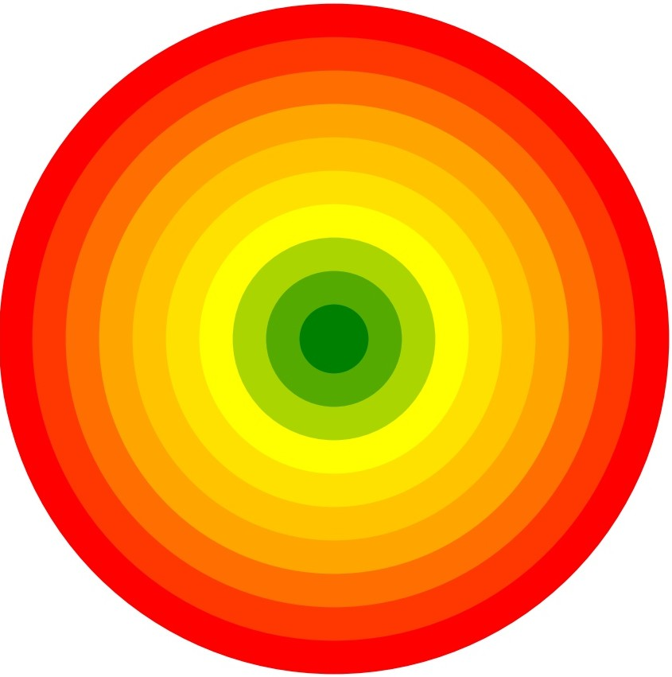

Immagini che il centro del cerchio rappresenti il pieno raggiungimento del successo con la terapia. Clicchi sul punto del cerchio che meglio descrive quanto sente di aver raggiunto questo obiettivo con la terapia che sta attualmente assumendo. Più vicino al centro significa un maggior successo della terapia.

Punteggio:
Vai al questionario GE
Questo progetto è un'idea del Dott. Andrea Lotesoriere.
È attualmente in corso uno studio di validazione presso l'Università di Ferrara.
Tutti i diritti riservati.